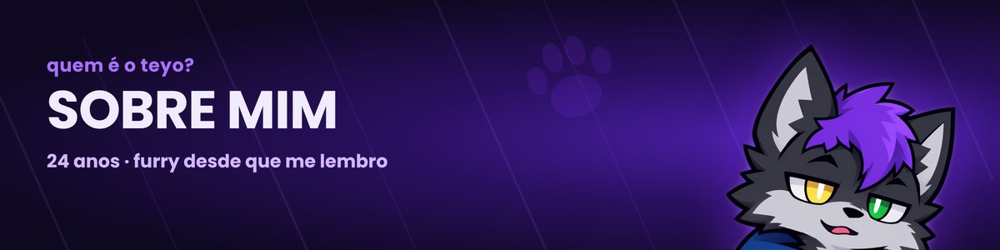

Sobre mim
Matheus · desenvolvedor front-end e streamer
Oi, eu sou o Matheus, tenho 24 anos e trabalho com desenvolvimento web, principalmente front-end, e com criação de conteúdo na Twitch como teuzin0dev. Gosto de transformar o que preciso nas minhas próprias lives em ferramentas que outros streamers também possam usar.
Formação e foco
- Técnico em Desenvolvimento de SistemasETEC de Registro
- Desenvolvimento de Software Multiplataformagraduando · FATEC
- Foco atualfront-end, ferramentas para streaming
O que eu faço
Crio sites e ferramentas para quem faz live: o TeuzinBetterChat (chat e overlay para OBS), o OverlayKit (editor de overlays), a Expedição Abissal (jogo para o chat) e o Recadin, um serviço de recados por Pix. Quase tudo roda no navegador e a maior parte é gratuita.
Quem está por trás
Os projetos e serviços deste site são feitos e mantidos por mim. Os que envolvem pagamento, como o Recadin, são operados por mim como MEI, e a comissão desses pagamentos é recebida pelo meu CNPJ.
- responsável
- Matheus (teuzin0dev)
- CNPJ (MEI)
- 55.730.362/0001-20
Dados de privacidade e termos de cada projeto estão nas respectivas páginas, como em TeuzinBetterChat.
O Teyo e a matilha
O Teyo é a minha sona, um lobo cinza de cabelo roxo, e é a identidade visual do canal e dos projetos. Sou furry desde que me lembro e a comunidade me recebeu de braços abertos; por isso mostro essa parte de mim nas lives. A comunidade se chama matilha, e quem chega é bem-vindo.
Vamos conversar?
Passa na live, entra no Discord ou me chama em qualquer rede ao lado.